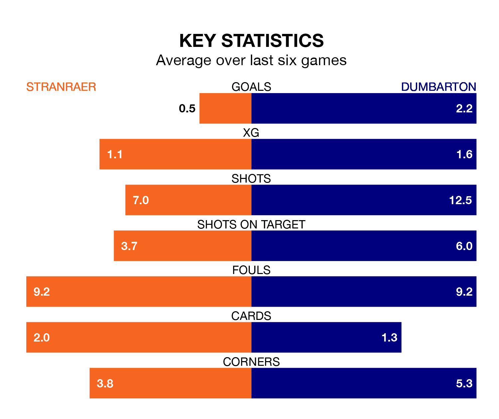

Relegation candidates Stranraer face a challenge against high-flying Dumbarton at Stair Park on Saturday.
Stranraer are ninth in the League Two table, and have picked up eight wins and eight draws in their 33 games to date.
The Sons, meanwhile, are third in the standings with 55 points, having won 16 and drawn seven, and are 11 points behind table-toppers Stenhousemuir.
With 53 goals in 33 games so far this season, Dumbarton are the league's joint-highest scorers with 1.6 goals per game. And they are conceding fewer than average, letting in 40 goals at a rate of 1.2 per game.
Stranraer, meanwhile, are below average scorers, with 1.1 goals per game, compared to a league average of 1.3. They have conceded 1.5 goals per game.
The hosts are in terrible form in League Two, with no wins and two draws from their last six games.
With four wins and a draw over that period, the Sons's form is much better – they have taken 13 points from 18, compared to Stranraer's two.
In the last 10 years, Stranraer and Dumbarton have played each other on 19 occasions. Stranraer won six of them, Dumbarton nine, and they drew four times.
On average, Stranraer scored 1.2 goals and the Sons 1.5 in those matches.
Their last meeting was on March 5, when Stranraer won 5-0 at home.
In Tony Wallace, the away side have one of the league's sharpest shooters so far this season. He has notched 11 goals in 33 appearances, to sit fifth in the scoring charts.
Stranraer's top scorers, with five goals each, are Thomas Orr and Deryn Lang.
Stranraer's last match was on April 13, a 0-0 draw against Spartans.
Dumbarton beat Clyde 1-0 last time out, also on April 13, with James Hilton on the scoresheet.
Updated: 11:31 (UTC), 15/04/24